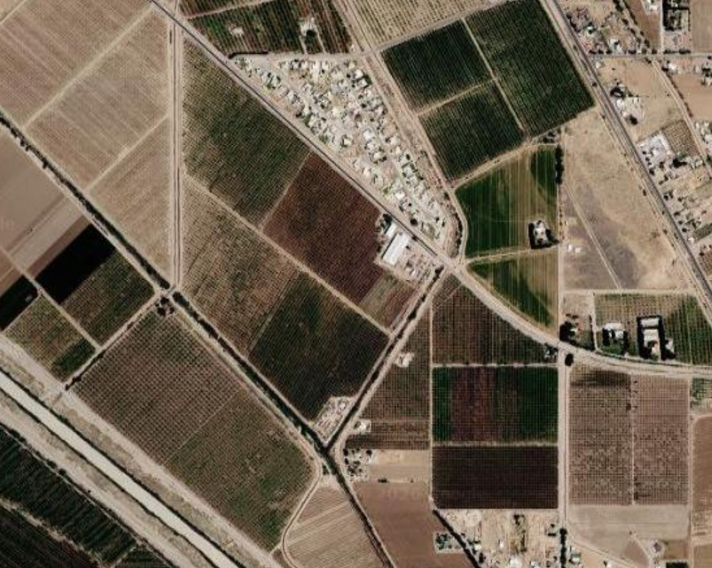
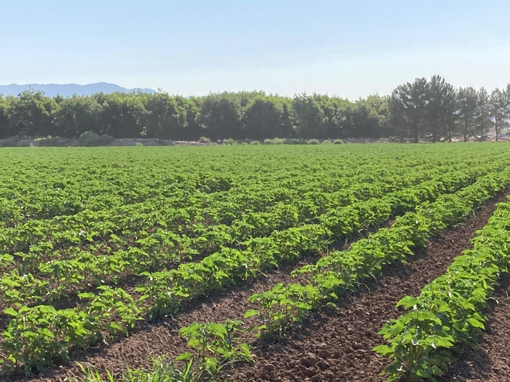
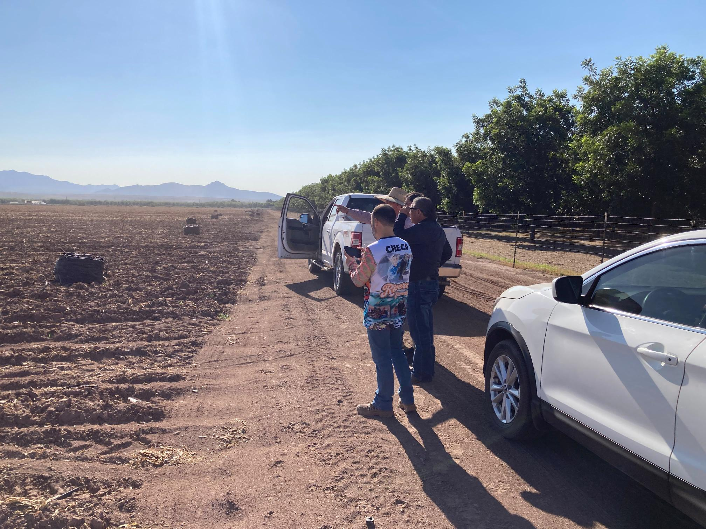

Remote Sensing
Satellite, UAV, hyperspectral, multispectral, thermal, and SAR observations for agricultural monitoring.
◉ Learn more →
Integrating satellite observations, UAV imagery,
field measurements,
image processing, and hands-on STEM education.

Satellite, UAV, hyperspectral, multispectral, thermal, and SAR observations for agricultural monitoring.
◉ Learn more →
Vegetation monitoring, crop health, soil conditions, irrigation, and spatial variability.
◉ Learn more →
Hands-on student training in remote sensing, programming, data analysis, GIS, and field measurements.
◉ Learn more →RGB and hyperspectral measurements for calibration, mapping, and validation.
View researchHands-on experience in remote sensing, satellite, airborne and ground-based observations.
View field work